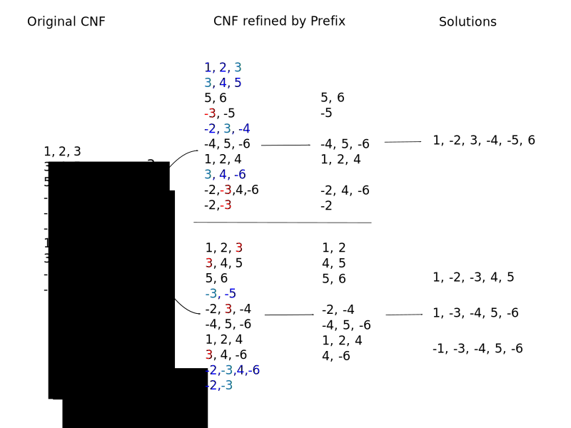
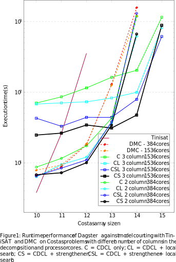

Tutorial 2: Components of Dagster System CDCL & SLS & Strengthener
Review
Last tutorial, we introduced the SAT problem and introduced CDCL and SLS processes
Where CDCL, systematically backtracks over possible assignments in order to find solutions
SLS randomly searches through possible assignments to satisfy as many clauses as possible
Today:
How does Dagster parallelise search
How do components, CDCL/SLS/Strengthener collaborate
Fundamental Problem: how to parallelise the process
Primary approaches are to break the problem into parts, either by clause sets, or cubes.
Dagster uses both
Breaking by cubes
Assigning variables either way breaks the search space into disjoint spaces
break problem into plurality by disjoint cubes of assignments
solutions are union of part solution
Breaking by cubes

Breaking by clause subsets
Partitioning the clauses into different problems which have overlapping search spaces
solutions are intersection of part solutions
Breaking by clause subsets
Intermix: Breaking by sequence
Decompose the problem into subproblems, with the second dependent on the first.
Solutions to the first thereby are associated with solutions to the second.
Solutions to a first are passed as additional unit constraints on multiple solvings of the second
Problem solutions are solutions to the second solvings
Intermix: Breaking by sequence
Comparison
Breaking by cubes: Simple disjoint searching
Breaking by clause subsets: parallel solving, difficult mixing
Breaking by sequence: mix of the two - cubing the second by the solutions of the first

"Dagster: Parallel Structured Search with Case Studies"
PRICAI 2022 (forthcomming)
Mark Burgess, Charles Gretton, Josh Milthorpe, Thomas Willingham, Luke Croak and Alwen Tiu